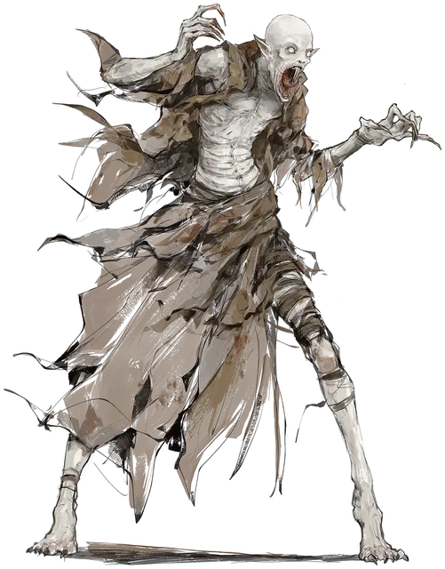

Носферату
Nosferatu
Средняя Нежить

Класс Доспеха 17 (природный доспех)
Хиты 85 (9к8 + 45)
Скорость 40 футов
| мод | спас | ||
|---|---|---|---|
| СИЛ | 20 | +5 | +5 |
| ЛОВ | 18 | +4 | +7 |
| ТЕЛ | 21 | +5 | +8 |
| мод | спас | ||
|---|---|---|---|
| ИНТ | 6 | −2 | −2 |
| МДР | 17 | +3 | +6 |
| ХАР | 14 | +2 | +2 |
Навыки Восприятие +6, Скрытность +10
Сопротивление урону некротическая энергия
Иммунитет к состояниям испуг, очарование
Чувства тёмное зрение 120 футов, пассивное Восприятие 16
Опасность 8 (3900 опыта)
Бонус мастерства +3
Особенности
Языки. Языки, которые он знал при жизни.
Регенерация. Носферату восстанавливает 10 хитов в начале своего хода, если у него есть хотя бы 1 хит и он не находится под солнечными лучами. Если носферату получает урон излучением, эта особенность не действует в начале следующего хода носферату.
Паучье лазанье. Носферату может лазать по сложным поверхностям, включая потолки, без необходимости совершения проверок характеристик.
Гиперчувствительность к солнечному свету. Носферату получает 20 урона излучением, когда начинает свой ход под солнечным светом. Находясь на солнечном свету, он совершает с помехой броски атаки и проверки характеристик.
Необычная природа. Носферату не нужен воздух.
Действия
Мультиатака. Носферату совершает две атаки когтями, а затем совершает одну атаку укусом. Если обе атаки когтями попадают в одно и то же существо, атака укусом совершается с преимуществом.
Коготь. Рукопашная атака оружием: +8 к попаданию, досягаемость 5 фт., одна цель. Попадание: 9 (1к8 + 5) рубящего урона.
Укус. Рукопашная атака оружием: +8 к попаданию, досягаемость 5 фт., одно существо. Попадание: 9 (1к8 + 5) колющего урона и 7 (2к6) урона некротической энергией. Если у цели неполные хиты, вместо этого она получает 11 (2к10) урона некротической энергией.
Максимальное количество хитов цели уменьшается на величину, равную полученному урону некротической энергией, и носферату восстанавливает хиты в эквивалентом размере. Уменьшение длится до тех пор, пока цель не завершит продолжительный отдых. Цель умирает, если ее максимальное количество хитов уменьшается до 0. Гуманоид, убитый таким образом, а затем похороненный в земле, поднимается как носферату через 1к10 дней.
Извержение крови (Перезарядка 5-6). Носферату извергает из себя кровь в 15-футовом конусе. Каждое существо в этой области должно совершить спасбросок Телосложения Сл 16. При провале существо получает 18 (4к8) урона некротической энергией и не может восстанавливать хиты в течение 1 минуты. При успешном спасброске существо получает вдвое меньше урона без каких-либо дополнительных эффектов.
Описание
Злобные неживые охотники, носферату обладают бесконечной жаждой вампиров [vampire], но не их грацией. Для них существование — не что иное, как бесконечная череда холодных, отчаянных ночей, перемежающихся прекрасными всплесками мгновенного тепла и просвещения. Эти радости мимолетны, так как их зависимость от крови никогда не может быть удовлетворена.
Носферату питаются всеми, в ком течёт кровь. Кучи изуродованных крыс и конюшни, превращенные в скотобойни, — типичные первые признаки охоты носферату. Когда солнце прерывает их охоту, носферату отступают в любимые руины, канализацию или пещеры, не заботясь о комфорте своего логова. Вместо того, чтобы удалиться в склепы, они ищут грязные или недоступные трещины, места, которых избегала бы любая живая душа.
В течение нескольких мгновений после кормления носферату приходят в сознание и способны думать о большем, чем их следующая трапеза. В эти мгновения носферату являются проблесками того, кем они когда-то были, существами, которые знали гордость, желание и мир за пределами теней. Возможно, их даже на мгновение убедят поговорить с другими существами. Однако те, кто общается с носферату, обычно находят их эгоистичными, двуличными существами, чьи воспоминания поблекли и чье базовое уважение жизни давно умерло.